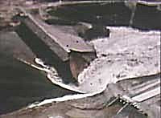
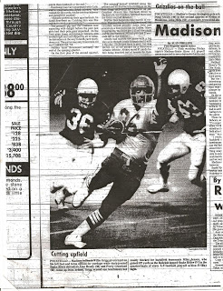

The greatest man I will ever know: My father, L. Richard Grigg, holding his grandson, Jefferson Leonidas Grigg (age 3 at the time), circa 2004.
At some point in each visit we pay to my parents' home I find myself pondering a curious object found in their washroom -- a small glass cologne dispenser in the shape of a mallard.
The artifact entered my childhood home as a Nixon-era Christmas present to my father, and has survived no fewer than a dozen migrations across three states. The aromatic toiletry dispensed from it has a pleasant if generic scent vaguely reminiscent of Hai Karate (a 1960s-era cheapie cologne that was marketed as an Axe-style olfactory aphrodisiac.). To this day the decanter appears to be a little less than half full.

The sight of that insipid little cologne bottle has an effect on me akin to that described by the protagonist from Remembrance of Things Past as he consumes his first morsel of tea-soaked Madeleine cake. I find myself irresistibly transported back to my childhood in a home presided over by loving, thrifty parents whose formative years were indelibly marked by the experiences of the (last) Great Depression.
Like tens of millions of Americans, my mother and father lived by the Depression-era credo, "Use it up, wear it out; make it do, or do without." They would never buy something new -- an appliance, an article of clothing, an automobile, or a piece of farm equipment -- when it was possible to extend the lifespan of a suitable item already in our possession.
My parents, like many others of their generation, preferred saving to spending, and self-reliant home production to the typical consumer lifestyle.
We always had a garden, albeit sometimes a very small one, in order to grow our own produce, which was always much better than what we could buy at a grocery store. Mother always canned whatever we harvested; she also baked bread (often from grain we grew ourselves), churned butter (from a cow I often milked by hand), and kept our old clothes in good repair. Dad would only throw something away if he couldn't devise some suitable use for it, and in doing so he constantly surprised me by the depth and variety of his imagination.
During the early 1970s, after Nixon definitively de-coupled the dollar from gold and our economy was plunged into a recession, Mom and Dad began to stock up on survival foods of various kinds.
In keeping with the prime directive of food storage -- "store what you eat, and eat what you store" -- our family soon became acquainted with the odd but hardly unpleasant flavor of storable surrogates for more familiar staples, such as carob powder as a replacement for cocoa, and textured vegetable protein (TVP) as a substitute for sausage on pizza.

In 1979, as Carter-era stagflation plagued the national economy, our family relocated from eastern Oregon to southwestern Idaho. Shortly before our move, my father -- a real estate broker -- consummated a sale in which the closing costs were paid, in part, by a large quantity of silver in the form of bars as large as 100 ounces.
After we re-settled in Madison County, Dad put the silver in safe storage and tried to establish himself in the local real estate market.
Unfortunately, we arrived just as a reconstruction "boom" went bust.


In June 1976, Idaho's Teton Dam failed, resulting in a flood of nearly Katrina-esque proportions.
The Teton Dam was little more than a very large berm, constructed with government-standard indifference according to familiar government-standard practices -- in other words, through the exercise of minimal competence at maximum expense.
(Ironically, one eyewitness to the disaster was a farmer named Daryl Wayne Grigg, who is -- as far as I can tell -- no relation.)
The Feds spent $100 million to build the Teton Dam; it spent at least $300 million in settling damage claims. For more than two years, federal money poured into communities throughout the devastated floodplain, including Madison County. But the reconstruction boom was over by the time our family arrived, and the real estate market collapsed like a traumatized souffle, or better yet, like a federally constructed dam.


Glory Days: Your author, as he appeared during the last major recession, roughly three decades and sixty pounds ago.
For the five years spanning most of my time in high school and college -- 1979-1984 -- my Dad's real estate business, in practical terms, produced no income.
Facing a moribund real estate market, my Dad opened another revenue stream: He and two of my brothers, along with a rotating cast of neighbors, opened a bicycle repair shop. This was a business suited to recessionary times, in which people, once again, seek to extract as much use out of what they have.
The bike repair business brought in a modest but indispensable stream of income. But what saved our family from utter destitution was Dad's silver hoard.
In January 1980, about a year after our family moved to Rexburg, Idaho, silver peaked at a little more than $50 an ounce. Dad sold his entire hoard, which had appreciated by several hundred percent over its original market value, just off the peak price. That transaction provided our family with sufficient funds to survive for more than a year.
Shortly thereafter, our family became involved in a short-lived but very worthwhile alternative local economy built on the barter system.
Consumer items of various kinds -- clothing, jewelry, household goods, storable foods -- were pooled and then assigned credit value according to market demand; those "credits" were then withdrawn and used to purchase whatever their owner desired. It was in this way that my three younger brothers and I were provided with school clothes in the fall of 1980, and presents the following Christmas. Alas, that worthy enterprise perished after the parasitical clique calling itself the government contrived a way to tax it.
During this period I was a teenager largely oblivious to the stressful challenges confronted by my parents as they tried to provide for a family of nine with no conventional means of earning a living.
My biggest preoccupations at the time involved such things as learning the guitar stylings of Michael Schenker and Frank Marino, keeping up with my self-imposed nightly football workouts (which at the time consisted of 1,200 situps and about half as many pushups), and wondering if I'd ever run into an Erin Gray lookalike.*
I had only the sketchiest idea of the genuinely heroic efforts being made by my parents not only to keep our family alive, but to make their large brood of omnivorous children happy.
Owing entirely to the thrift and industry of my parents, our family survived a severe national recession and a local depression without suffering noticeable privations of any kind. We were well-clothed, well-fed, blessed with a comfortable home and surrounded by a surprising number of amenities.
Several times since then my parents have suffered severe reversals of fortune. At one point they were forced to live without reported income in the late 1980s owing to the efforts of a corrupt tax collector (but then I repeat myself) to extort personal payoffs from them. (My father adamantly refused to reveal his identity to me at the time he was making life miserable for him and my mother. "Dad, tell me who it is," I demanded. "Why do you want to know?" he asked. "It's better that I not answer that question," I replied. "Well, then, I can't tell you," he said, ending the conversation.)
Our family was immensely blessed by the Depression-era lessons learned by my parents regarding self-discipline and deferral of gratification. It's hardly surprising that people who displayed such commendable austerity would keep a bottle of cheap but serviceable cologne for nearly four decades; after all, it hasn't been used up, so why throw it out?
Obviously, my parents fit the profile of "hoarders" -- people who shirk the patriotic duty to spend everything they make, leverage themselves as deeply as they can, and consume as much as possible in order to boost "aggregate demand."

In fact, people of that insular, provincial mind-set are responsible for the ongoing economic collapse, according to the bien-pensants.
The stolid refusal of hoarders to do their part is undermining the generosity of the Federal Reserve in pumping "liquidity" (that is, inflated dollars) into the economy, and the heroic efforts of Obama the Good and Wise to spend as much as possible to restore prosperity to our troubled land.
In a cover story lamenting the fact that the past year and a half has witnessed a cultural shift from profligacy to parsimony, Newsweek strikes a tone at once patronizing and accusatory in addressing those who choose to save rather than spend.
"The rush to hoard cash and pinch pennies is understandable, given that some $13 trillion in net worth evaporated between mid-2007 and the end of 2008," the story begins, and if it had been written by an honest and rational man the matter would have ended there. But the author perversely persisted, ignoring sound economic sense in favor of forcing a Keynesian homily on his long-suffering readers.
While it "makes complete microeconomic sense for families and individual businesses" to economize, that behavior "is macroeconomically troubling," Newsweek continues. "For our $14 trillion economy to recover and thrive, hoarders must open their wallets and become consumers.... [I]n our economy in which 70 percent of activity is derived from consumers, we do need our neighbors to spend. Otherwise we fall into what economist John Maynard Keynes called the `paradox of thrift.' If everyone saves during a slack period, economic activity will decrease, thus making everyone poorer."
The same rebuke is offered, in much sterner language, by the New York Times. In the midst of a paean to the Federal Reserve for conjuring into existence more than $1 trillion to buy bad debts -- hundreds of billions in worthless mortgages from Fannie and Freddie, and even more to purchase Treasury bonds -- the Times takes a swipe at "lenders [who are] unwilling to lend and borrowers [who are] unwilling or unable to borrow."
According to Jay Hatzius, chief economist at Goldman Sachs (aka the Shadow Treasury Department), our deepening economic collapse is entirely the fault of those narrow-minded "hoarders": "We're in a deep recession mainly because the private sector, for a variety of reasons, has decided to save a lot more."(Emphasis added.)
Now, Hatzius works for Goldman Sachs, which means that he's a bit like a mob bookkeeper, albeit much less reputable and trustworthy. Minds not terminally clotted by Keynesianism should be able to understand that Hatzius is deliberately confusing cause and effect, and maliciously blaming the victims in order to exculpate one the chief offenders in the recently ended orgy of Fed-abetted financial fraud.
The Times, a dying propaganda appendage of the Power Elite (and may its demise come quickly), would have us believe that the key to prosperity is the Fed's ability to create "vast new sums of money out of thin air" -- the exact phrase it used to describe the recent "injection" of $ 1 trillion by the central bank into the U.S. economy -- coupled with unbridled consumption by both government and the population at large.
Sounder minds understand that there is no discontinuity in the economic laws governing both "micro"- and "macro"-economies: Neither nations nor households can build prosperity through debt and consumption, but rather through thrift and productivity.
The emerging media campaign against "hoarding" has a nasty and unmistakable flavor of Stalin-variety collectivist scapegoating: The term "hoarders" was produced by the same propaganda mill that churned out official imprecations against "wreckers" and "kulaks."
Scapegoating as precursor to genocide: "We will keep out the Kulaks," declares this 1930 Soviet propaganda poster, referring to the peasant farmers who were demonized and then slaughtered by the regime in the engineered famine of the 1930s.

Whenever a collectivist regime expands its control over an economy, it has to find somebody to blame for the inevitable dislocations, shortages, and hardships.
Typically such ruling elites re-direct blame at those who behave in rational economic behavior. And scapegoating in such circumstances is inevitably a prelude to outright confiscation of wealth, and, eventually, the liquidation of those intransigently committed to individual freedom and dignity.
The Fed and its cohorts are already confiscating the earnings of "hoarders" through inflation. But as the effects of Obamanomics become tangible, and our country begins to follow the course charted by Zimbabwe, those responsible for the disaster won't be content with such an indirect assault.
Already we're being told that it's un-American to divest ourselves of fiat dollars in favor of gold and silver. Obama the Blessed Himself has ordered Americans to refrain from stashing their money under their mattresses. And there's even an intriguing effort underway to categorize the "hoarding" tendency as a variety of obsessive-compulsive behavior; this offers intriguing and terrifying possibilities for Soviet-style compelled psychiatric imprisonment for those who prefer to wear out what they have, and save their money rather than spending it.
Ours is hardly the first society to succumb to the plague of fiat money and inflation, and the totalitarian regime being fastened upon us will hardly be the first to anathematize and, perhaps, seek to annihilate, those who insist on protecting what they've earned and saved.
Be that as it may, our only plausible hope for survival -- as individuals and families, and as voluntary communities of shared interests and values -- is to do exactly the opposite of what the government instructs us. And this begins with the careful study, and appropriate emulation, of the wise people who are increasingly maligned as "hoarders."
__
*Miss Gray, for the uninitiated, played the redoubtable Col. Wilma Deering on the late-70s fromage-fest Buck Rogers in the 25th Century. She is a lovely and, by all accounts, very decent lady, but in terms of radiant beauty, comparing her to my Korrin is a bit like comparing a penlight to a supernova.
 On sale now.
On sale now.Dum spiro, pugno!
21 comments:
Ahh this brings back memories of good times. Grandparents were farmers from Illinois and did all the canning and mason jarring of food. Grandpa worked for the railroad for 30 some odd years and grammaw survived on his pension when he passed on. To survive Depression ver. 2.0 will take community and family. Everything the government gets it's corrupt incompetent hands on will turn to a heaping pile of manure, even the nimrods realize this. Just read a disturbing article about H.R. 645 National Emergency Centers Act and it brought to mind a quote by Lily Tomlin "it's going to get alot worse before it gets worse."
I'm a few years younger than you, Will, but I can't remember every going without during the late 70s to mid 80s either. And yet I know my parents had to sacrifice a lot. I do recall several times when my father was laid off from the steel mill in Indiana, and my mother went to work for peanuts as a nurse aid. Looking back, I keep thinking I should remember going without, but nope. Mom and Dad provided wonderfully throughout it all. Come to think of it, I do remember some yummy government cheese and butter a few times.
As an individual who remembers the aftermaths of the early thirties and the needs of "victory" gardening as the recession continued 'til after the 2nd WW... Maybe we all should get back to the years gone by... I still live by the caveat from my parents "waste not want not"...
I too remember late 70s and early 80s and how although my family didn't have a lot we never went without. My dad worked in a dowel mill in western Maine while my mom worked at the front desk, on the weekends, at the local hospital. Despite theses humble occupations all six of their children attended a variety of private parochial schools. My dad eschewed all forms of debt ( outside of the house mortgage) and never spent a dime on buying anything new. His view was that second hand will do just fine. Although my parents avoided taking advantage of any government handouts I do remember on a few rare occasions ( like Mr Newberry) enjoying fine slices of yummy orange colored govt cheese. Ahh the memories.
Will, I had a crush on Erin Gray too; so you're not alone.
My wife and I have been saving a bit too but you know, things have changed so much since my grandparents were around we are finding it difficult to live as thrifty as I remember them doing. Sure everything costs more but things just don't last like they did then and aren't as easy to fix. Often times, more expensive to fix than to buy new. This isn't an excuse but rather something I've become painfully aware of as I and people I know, need to replace things purchased only a few years ago. It's a sad cycle we ride.
Talk about a blast from the past. I haven't seen one of those five pound boxes of bootleg Velveeta in years! Does satangov still pass those out to po' folks? Ohh that's right poor people are expected to stay out of societys face and go die since Ronnie Raygun and the neo-nazi conservatives strangled government in the bathtub. They had to do something about Sheenequa the welfare queen and her Cadillacs sittin' on triple gold Daytons. Welfare is only for corporate pimps not poor schleps! Aww Shucks all this nostalgia I'ma cut the front out of my bib overalls and let my potbelly boiler hang free and pack a fresh bowl of Borkum-Riff before that 2400% tax increase on class J loose tobacco kicks in. Yeee Hawww! Have a better one.
erin gray.
man. one of three people who need to eat in my kitchen.
rick
Just over a year ago, I told my mom what was coming down the pike with the economy. She replied, "I don't know why each generation spends their lives scrimping and saving, when the government is just going to take it in the end."
My grandparents' life savings was plenty good enough to last my grandmother the rest of her life after my grandpa died.....until the inflation of the 70's came along and destroyed it. And now, the same thing is happening to my parent's life savings.
Luckily, in the early 60's when it was announced that the minting of silver money was to cease, my grandparents began "hording" (providentially) all the silver that passed through their hands. They managed to fill three or four gallon jars with it before it stopped circulating, which they buried in the back yard. My parents and grandparents let me and my sister in on the plan, and required us to memorize where the stashes were located. I was only 11 years old in 1964, so I was very proud that they thought I was responsible enough to keep such an important family secret. At any rate, when the silver price rose so high in 1979 and 1980, my grandma sold most of it to keep herself going, since her life savings were shot.
Just before my wedding in early 1980, she said to me one day, "Hold out your hands." She poured all the silver coins I could hold into my hands, which were excitedly forming a nice, big cup (!), and said, "I will sell that silver, and the proceeds from it will buy you two airline tickets for a Hawaii honeymoon."
Thank the Lord for silver linings.....
Although I haven't personally seen either of the propaganda pieces mentioned, I would hazard a guess that neither Newsweek nor The New York Times offered any advice on what you're supposed to do the day after you run out and spend all your money on fake vomit, cinnamon-flavored dental floss, and cheese that comes in a spray can.
If Henry Hazlitt were alive today, I don't know what he'd say. Then again, maybe I do.
While everyone was distracted by the AIG circus H.R. 1388 the GIVE act has passed. This is the mandatory service for all young people. If you have any children in teenage years you should know about this. Also S.277 The Serve America act is up next. Let's see if the Obamanites are ready to put their money where their mouth is and serve the collective. Also is that 2400% tax increase on loose tobacco only in Michigan or nationwide? Lastly here is a fun quote from Maggie Thatcher "The problem with socialism is sooner or later you run out of other peoples money."
Here's one of the worst of the Keynesian "solutions" suggested: this writer suggests they punish savers by taxing bank deposits!
http://www.timesonline.co.uk/tol/comment/columnists/anatole_kaletsky/article5469589.ece
Will receives +2 kudos for referencing both Micheal Schenker and Erin Gray in the same paragraph. I still have that MSG album somewhere, along with all the old Scorpions albums. Awesome stuff. Hey Will: who do you think had cooler rock-n'-roll hair: Klaus Meine, or Winston Churchill? It's a toss-up.
As for Erin Grey...I still have vivid mental images of her turning away from the camera and walking away wearing those skin-tight silver pants. A glorious thing, watching Wilma Deering walk away. I'd like to sand down the busts of Abraham Lincoln and TR on Mt. Rushmore and replace them with a sculpture of Erin Gray's silver-clad caboose circa 1980. Imagine that next to Jefferson. What say you? That's one public-works earmark I'd like to see some South Dakota congressman sneak onto the "stimulus" package. (Insert 'Erin Gray' and 'stimulate package' pun here.)
Did you know that in 1980 the Dep't of the Interior had Gil Gerrard's chest-hair forest declared a national park? Tragically, this once-vibrant ecosystem was decimated by the Great Gil Gerrard Chest-Hair-Forest Fire of 1982, caused by careless campers. Only an oversized medallion of the pointy-arrow 'male' symbol remained between the pectoral mountains. But restoration efforts are underway. Ladies, commence the swooning! Buck Rogers In The 25th Century Which Sure Looks A Lot Like 1980!
@Omega Man do those old Scorpions albums have Uli Jon Roth on the axe? A smoking guitar player but unknown.
Will & Friends,
One lives in eternal hope that one of these days the so-called "profession" of "Economist" will be regarded with the same revulsion as "Vomit Taster" or "Auschwitz Camp Pediatrician."
The "Economists" are responsible for more human poverty and suffering over the past century than all the earthquakes, volcanoes and hurricanes combined.
I love that quote from Maggie Thatcher, "The problem with socialism is sooner or later you run out of other peoples money." (Thank you, Mr. dog-and-pony-show.)
I have another one from Winston Churchill, who one day, after the Parliamentary debate, found himself in the men's room with Prime Minister Clement Attlee. Atlee was at the first urinal, and Churchill moved down to use the last urinal. Said Attlee to Churchill: "Feeling rather stand-offish today, are we, Winston?" To which Churchill replied: "Not at all, Clem, it's just that whenever you socialists see something large and functioning smoothly, you want to nationalize it."
The present crew of Obama Socialists, unfortunately, are not even as smart as the British Socialists - they are spending other people's money (Ours!!) to nationalize businesses that are already dead and non-functioning, and will never get up or show signs of life again. The strangest thing, which would make Marx split a gut, is that we now have socialism for the capitalists - using the people's money to reimburse the fortunes of the thieves who robbed the people blind for 28 years, and then lost the loot somewhere between the stagecoach and the bank.
I used to call these people vampires, because they sucked the blood of a groaning humanity, but now they have become maggots, feasting on the already dead bodies of their victims.
Reminds me of the story of the guy (probably a Democrat,) who bought a donkey for $500, then the next gay it dropped dead. The vendor (must have been a Republican,) refused to give him his money back. A week later, they see each other and the vendor says, "What did you do with the donkey?" Buyer says, "Oh, I got $1,999 for it." "WHAT?" says the buyer, "For a dead donkey?" "Yeah," says the buyer, "I sold 2,000 raffle tickets at $1 each, and only the guy who won the donkey asked for his money back."
The economists surely have invented a name for this - probably something like: "The Negative Regression Quantum Validity Theory of Commoditization of Selected Posthumous Instances of Equus Asinus."
Folks, we are buying - without even giving our consent - trillions of raffle tickets for an already-dead donkey.
Yours in stunned disbelief,
Lemuel Gulliver.
to omega man,
i don't know if most folks would recognize the posterior if you replaced lincoln and roosevelt with it. however, it would be a great improvement. heck, they ought to name an aircraft carrier after her....
the USS Erin Gray. sounds kinda Shakespearean.
rick
Anon 616:
Why would you want to name a killing machine paid for with stolen money after a stone fox?
mongol Doc Ellis 124
In all probability, if the Federal Reserve's securities portfolio -- which now contains more junk than Treasurys -- were marked to market, the Fed's equity would be a big, fat zero. How is this entity with no actual wherewithal going to 'purchase' another $1.5 trillion worth of securities, an earnest visitor from Mars might wonder?
Imagine if you or I could write unlimited amounts of checks against our bank account, which is already overdrawn. But by law, it would be illegal to deposit or cash these checks. They would continue to circulate through the economy, just like coins or dollar bills do.
Likewise, when the Federal Reserve 'buys' $1.5 trillion of securities for the asset side of its balance sheet, it simply enters a corresponding $1.5 trillion bank deposit on the liability side, in the seller's bank account. The seller will write checks against this deposit, and the funds will circulate through the economy. But the freshly-created 1.5 trillion dollars can never be redeemed for the securities which allegedly, notionally 'back' it. Like all 'dollars,' they are perpetual and unredeemable liabilities of the Fed, which can't be 'cashed' into any tangible asset.
Ben Bankpanke and his glue-sniffing cohort, Timmy 'Jughead' Kitener, are running the biggest check-kiting operation in history, from our nation's capital of Ponzington, D.C. Their furtive money printing used to be done surreptitiously, in the form of periodic 'coupon passes' which only garnered the attention of the bond cognoscenti. But now these kinksters have come of the closet, announcing to the world that they're committing the monetary equivalent of auto-fellatio on a busy street corner in broad daylight.
When prices predictably explode, will President Obama appoint his horse to the Federal Reserve Board? How could we tell?
Sorry, but the U.S. is not a serious country no more. The authorities are mooning us, giggling helplessly as they huff more nitrous oxide. What, we worry?
There is SO much to respond to in this well written article. But one thing DEMANDS I comment:
I love Frank Marino's music too!
For those that haven't noticed the painfully obvious, the government has made it virtually worthless to save now.
Banks pay close to zero percent interest on CD and MM accounts. We all know where Treasuries are now. And even the dividend yield of the S&P has dropped by close to 25%.
All of this in the face of what could become a hugely inflationary environment...though the "official" word says No Inflation Worry.
But despite the above I am saving...more than before and like you wrote in your piece I am "preferr[ing] saving to spending, and self-reliant home production to the typical consumer lifestyle." Increasing the Do It Yourself projects, enlarging the gardens and even some bartering of my services for other's goods...staying as much "off the grid" of the government as I can reasonably accomplish.
Someone above said that maybe we should return to those days. Don't worry. We are! The difference is that, way back when, the results of the American experiment of the democratic-republic were not yet in. Today, the results are in. This arrangement leads inevitably to state plunder and predation. If we grant power over ourselves to others, they will exercise it to loot us and strip our children of their future. We may be nearing a time when the whole thing comes down around their ears and a new generation takes on the challenge of liberty--without appointing overlords over ourselves.
Sad as it may seem, universal frugality really would result in a depression. Mass production on the 20th century model, unfortunately, depends on pathological individual behavior for its survival.
In the late 19th century, the introduction of electrically powered machinery (what Mumford called the "neotechnic revolution") overcame the main rationale for the factory system: the need to economize on power from a single prime mover.
Had neotechnics lived up to their decentralizing potential, our economy would have developed into several hundred local industrial districts on the model of Italy's Emilia-Romagna region. Electrical power would have been integrated into craft production, with general purpose machinery frequently switching between products as orders came in, producing on a small scale for the local market.
Instead, the government intervened with the railroad land grants, tariffs and patents, etc., and made centralization artificially competitive. It gave the Dark Satanic Mills a new lease on life.
The industrial model that resulted, when electrical power was integrated into the factory system, was Sloanist mass production: extremely expensive, product-specific machinery that required large-batch production 24/7 to spread out the capital costs over as many units as possible. And with it came the imperative for the corporation to exert external control over the rest of society, to make sure the output was absorbed and the wheels could keep turning without a glut of rising inventory. That meant high-pressure marketing, planned obsolescence, consumer debt, and all the rest of it. As Huxley put it, "the more stitches, the less riches."
Overinvestment and underconsumption damned near killed state capitalism in the 1930s. What saved it was the world leaders helpfully blowing up most of the plant and equipment outside the U.S. in WWII, and pushing the rest button (at least until 1970 or so, when the old problems came back).
Since then, organized capital's been looking for one gimmick after another to dispose of surplus capital, in a way that won't increase output of goods in an economy where stagnant wages can't absorb what's already produced. The latest attempt was the ballooning of the FIRE economy over the past decade.
It hasn't worked very well. Before the downturn, industry could barely dispose of its output running at full capacity even when people maxed out their cards and tapped into home equity to replace everything they owned every five years. We'll never see that level of demand again, which means a lot of industrial capacity will turn to rust before long.
We need to backtrack to where we made the wrong turn over a hundred years ago. Not only a relocalization of manufacturing, but a renaissance of microenterprises in the informal and household economy, using spare capacity of ordinary capital goods most people own anyway (e.g., a microbakery using an ordinary kitchen oven, trading with market gardeners for veggies, eggs from the neighbor's chickens, a replacement part for the fridge custom machined in a backyard workshop, etc., with liquidity for the whole thing provided by a LETS system).
The funny thing is that, even though most people would consider material quality of life considerably improved under those conditions, it would be a disaster from the standpoint of the wonks in the Council of Economic Advisers. Paper GDP would drop through the floor. Heh heh.
Post a Comment